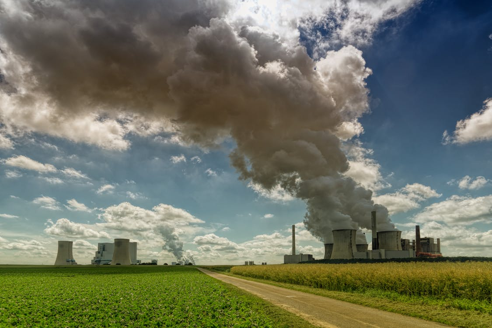

Meio ambiente e vida no Campo
07 de maio de 2025 Para quem vive no campo, a preservação do meio ambiente é essencial, pois a natureza está diretamente ligada à produção agrícola, à qualidade da água e à vida cotidiana. Existem diversas formas de solucionar os problemas ambientais nas áreas rurais, e muitas delas começam com pequenas mudanças de atitude e boas práticas. Uma das principais ações é o uso consciente dos recursos naturais. Evitar o desperdício de água, utilizar sistemas de irrigação eficientes e proteger nascentes são medidas fundamentais para garantir o abastecimento hídrico e a saúde do solo. Além disso, a rotação de culturas, o plantio direto e o uso de adubos orgânicos ajudam a manter a fertilidade da terra sem degradá-la.
Leia Mais